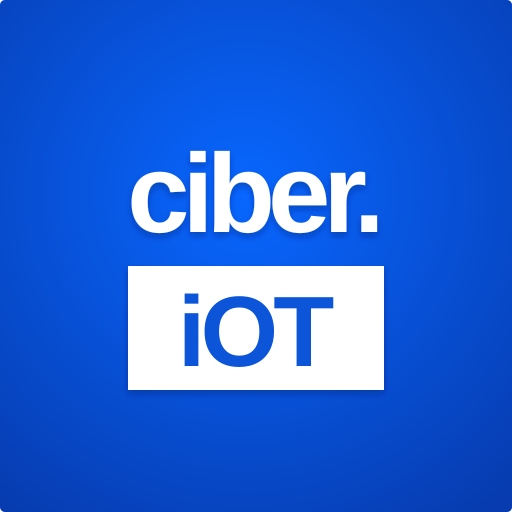

ESPECIAL · CIBERSEGURIDAD OT
La tecnología operacional en el centro de la conversación industrial
Espacio para destacar reportajes, análisis y publicaciones propias de CiberIoT.
Explorar publicaciones ↗
MEDIO DE COMUNICACIÓN · INDUSTRIA · INNOVACIÓN
Noticias, entrevistas y cobertura sobre ciberseguridad OT, minería, automatización y tecnología industrial.
Prototipo editorial. Las noticias, publicaciones y métricas se incorporarán tras validar el archivo de contenidos.
01 / ACTUALIDAD
Un espacio editorial para reunir actualidad, novedades y contenidos relevantes de los sectores que cubre CiberIoT.
Espacio para destacar reportajes, análisis y publicaciones propias de CiberIoT.
Explorar publicaciones ↗
Selección de coberturas y novedades.

Contenidos y tendencias del sector.
02 / ENTREVISTAS Y PROGRAMAS
Entrevistas, conversaciones y formatos audiovisuales para conocer a quienes impulsan la transformación de la industria.
 ENTREVISTAS
ENTREVISTASConversaciones con especialistas, empresas y protagonistas del ecosistema tecnológico e industrial.
 PROGRAMAS
PROGRAMASUn espacio para reunir formatos audiovisuales y emisiones vinculadas a CiberIoT.
 CONVERSACIONES
CONVERSACIONESOpiniones y temas que marcan la agenda de la ciberseguridad y la industria.
03 / EVENTOS Y COBERTURAS
Registro de congresos, encuentros, ferias y actividades del mundo minero, tecnológico e industrial.

Fotografías, entrevistas y contenidos desde eventos.

Material editorial y audiovisual de actividades.
04 / MULTIMEDIA
El canal de YouTube será el punto de partida para organizar entrevistas, programas, registros de eventos y cápsulas temáticas.
Visitar canal de YouTube ↗ Explorar videos y entrevistas
Explorar videos y entrevistas05 / QUIÉNES SOMOS
La presencia pública de CiberIoT lo presenta como un medio de comunicación enfocado en ciberseguridad OT, Industria 4.0, automatización, minería, tecnología e innovación.
La historia institucional, equipo, alianzas y descripción editorial se completarán con información validada por CiberIoT.
Conocer perfil institucional ↗06 / CONTACTO
Para propuestas editoriales, entrevistas, colaboraciones o consultas generales, ponte en contacto con CiberIoT.
Escríbenos directamente para coordinar una entrevista, compartir información o proponer una cobertura.
Escribir a prensa ↗El correo y teléfono son datos públicos pendientes de confirmación.